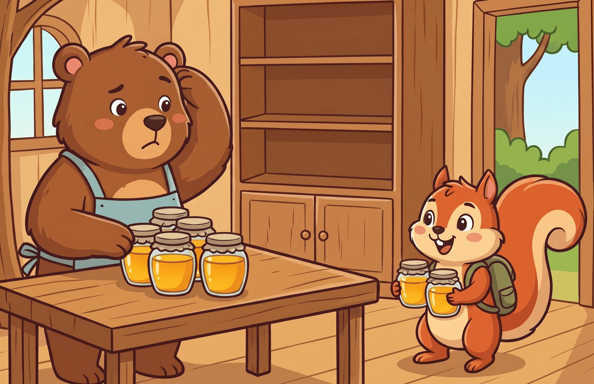
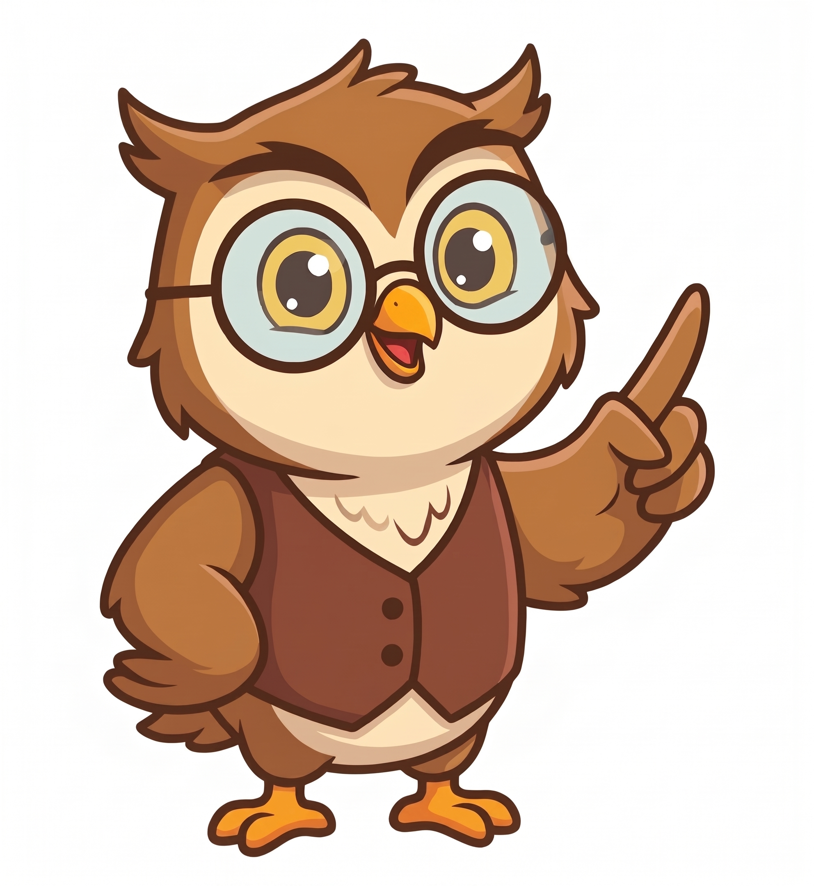
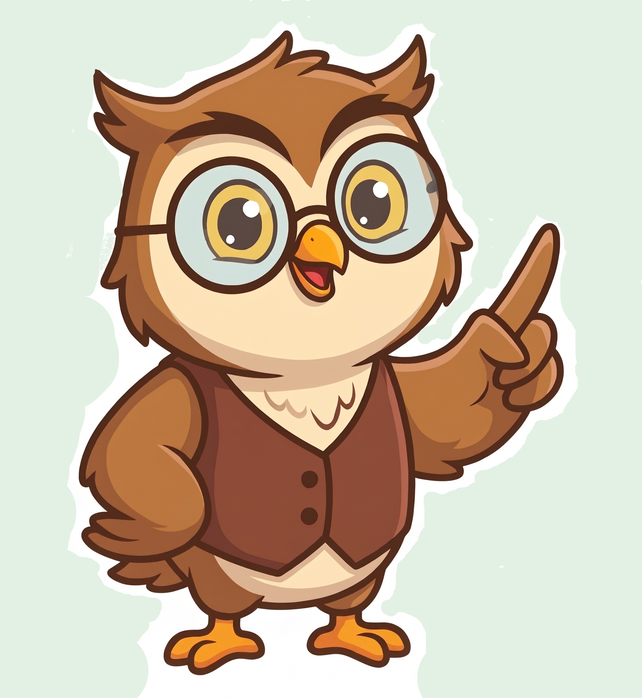
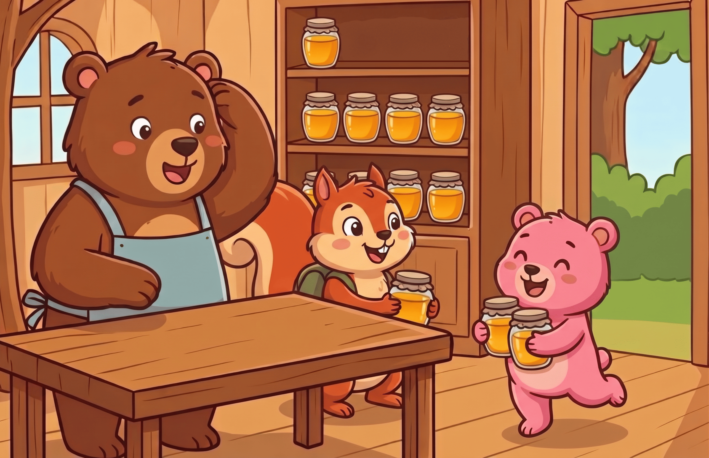
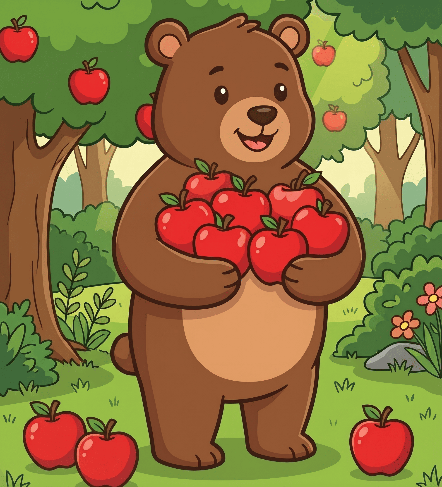
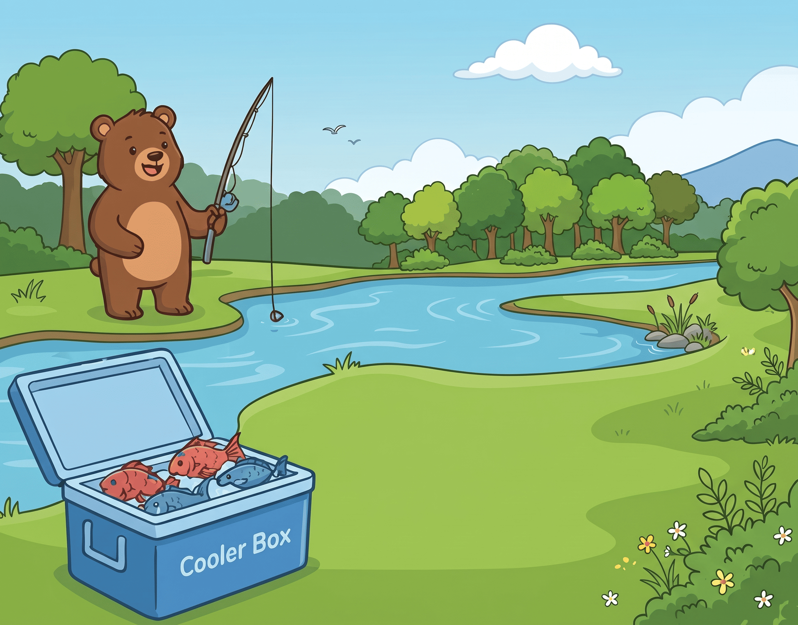

Eksplorasi Konsep Penjumlahan sebagai Penggabungan
1
Masalah
2
Petunjuk
3
Konsep
4
Simulasi
5
Refleksi
6
Latihan
1: Memahami Masalah Koko
Pagi ini Koko pergi ke Hutan Utara dan menemukan 5 toples madu. Sore harinya, sahabatnya Bona si Tupai datang membawa hadiah 4 toples madu dari Hutan Selatan.

Pertanyaan: Apa yang sedang dilakukan Koko?
Jawab: Koko menemukan madu.
Pertanyaan: Berapa madu yang Koko temukan sendiri pagi hari?
Jawab: 5 toples madu.
Pertanyaan: Berapa madu yang diberikan oleh Bona?
Jawab: 4 toples madu.
Pertanyaan: Menurut kalian, apa yang membuat Koko kebingungan?
Jawab: Koko ingin menyusun semuanya di satu lemari, tapi dia tidak tahu persis berapa banyak madu yang dia miliki sekarang.
2: Mencari Petunjuk

Guru Burhan: Apa langkah pertama yang harus dilakukan Koko?
Jawab: Menghitung jumlah toples madu yang dimiliki Koko.
Guru Burhan: Setelah menemukan jumlah toples madu, apa yang harus dilakukan Koko selanjutnya?
Jawab: Meletakkan semua toples madu ke dalam lemari.
Guru Burhan: Apakah madu Koko menjadi semakin banyak atau semakin sedikit? (Jawab bersama-sama!)
Semakin banyak!
Merancang Representasi
Ayo gambarkan ceritanya! Klik tombol untuk memunculkan kotak, lalu seret toples madu ke kotak besar.
3: Belajar Konsep Penjumlahan

"Anak-anak, ketika kita menaruh benda bersama-sama di satu tempat, itu disebut menggabungkan. Dalam matematika, ini disebut Penjumlahan."
( + ) berarti "ditambah" atau "digabung dengan". ( = ) berarti "hasil totalnya adalah".
5
Madu Koko
4
Madu Bona
Susun persamaannya!
Seret angka dan simbol ke kotak yang tepat.
4=5?+
4: Simulasi — Bantu Koko!
Coba kalian hitung berapa 5 ditambah 4, dengan memasukkan semua toples madu itu ke dalam lemari!
5: Refleksi & Hitung Maju
Guru: Apakah memindahkan dan menghitung madu dari angka 1 lagi itu berhasil?
Jawab: Berhasil, tetapi lama karena harus mulai dari 1 lagi.
Guru: Apakah ada cara menghitung yang lebih cepat tanpa harus dari angka 1?
Jawab: Ada! Simpan angka 5 di kepala, lalu lanjut hitung 6, 7, 8, 9. Ini disebut hitung maju.
5 di Kepala
Tantangan Nalar Kritis

Teman baru, Kiki, datang membawa 3 toples madu tambahan! Diskusikan bersama:
Tantangan 1: Bagaimana jika Kiki memberikan tambahan 3 toples madu lagi? Berapa totalnya sekarang?
Tantangan 2: Jika di dalam lemari hanya ada 2 rak, dan 1 rak hanya menampung 5 toples, bagaimana Koko menata toplesnya?
Jawab: Rak 1 diisi 5 dan rak 2 diisi 5, jadi 10 toples (1 puluhan). Sisa 2 toples (2 satuan) belum muat. Jadi 12 = 1 puluhan dan 2 satuan.
6: Latihan Mandiri

Latihan 1: Besoknya Koko memanen 7 apel, lalu menemukan 3 apel lagi. Berapa totalnya? Susun apelnya!
Di tangan Koko
Di tanah
🧺 Keranjang: ?

Latihan 2: Koko memancing. Lihat hasil tangkapannya, lalu lengkapi kalimatnya!
Awalnya Koko mendapat ikan. Lalu Koko mendapat lagi ikan. Karena dimasukkan ke satu kotak es, ikannya jadi di- . Total tangkapan Koko hari ini adalah ekor ikan.